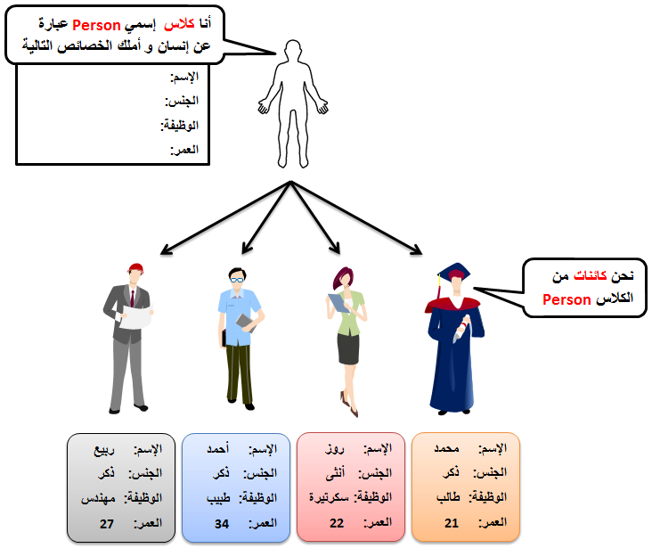

Pythonالكلاس و الكائن في بايثون
مفهوم الكلاس في بايثون
الكلاس عبارة عن حاوية تستطيع أن تضع بداخلها متغيرات, مصفوفات, دوال إلخ..
لتعريف كلاس جديد نكتب class, ثم نضع له إسم, ثم نضع نقطتين.
في المثال التالي قمنا بإنشاء كلاس إسمه MyClass, وضعنا فيه متغير إسمه x.
مثال
Test.py
class MyClass:
x = 3
مفهوم الكائن في بايثون
الكائن عبارة عن نسخة من الكلاس.
لإنشاء نسخة من كلاس معين, نقوم بتعريف متغير قيمته تساوي إسم الكلاس, ثم نضع قوسين.
في المثال التالي قمنا بإنشاء كلاس إسمه MyClass, وضعنا فيه متغير إسمه x. ثم قمنا بإنشاء كائن من هذا الكلاس إسمه obj.
مثال
Test.py
# MyClass هنا قمنا بتعريف كلاس إسمه
class MyClass:
x = 0
# obj إسمه MyClass هنا قمنا بإنشاء كائن من الكلاس
obj = MyClass()
# obj الموجود في الكائن x هنا قمنا بتغيير قيمة المتغير
obj.x = 10
# obj الموجود في الكائن x هنا قمنا بعرض قيمة المتغير
print('obj.x =', obj.x)
•سنحصل على النتيجة التالية عند التشغيل.
obj.x = 10
مفهوم الخصائص في بايثون
أي متغير تقوم بتعريفه بشكل مباشر في الكلاس يقال له خاصيّة ( Property ).
السبب في ذلك أن كل نسخة تنشئها من الكلاس ستملك نسختها الخاصة من هذا المتغير.
في المثال التالي قمنا بإنشاء كلاس إسمه MyClass, وضعنا فيه متغير إسمه x.
ثم قمنا بإنشاء كائنين من هذا الكلاس إسمهما o1 و o2.
مثال
Test.py
# MyClass هنا قمنا بتعريف كلاس إسمه
class MyClass:
x = 0
# o2 و الثاني إسمه o1 الأول إسمه ,MyClass هنا قمنا بإنشاء كائنين من الكلاس
o1 = MyClass()
o2 = MyClass()
# o2 الموجود في الكائن x و قيمة o1 الموجود في الكائن x هنا جعلنا قمنا بتغيير قيمة
o1.x = 10
o2.x = 20
# o2 الموجود في الكائن x و قيمة o1 الموجود في الكائن x هنا قمنا بعرض قيمة المتغير
print('o1.x =', o1.x)
print('o2.x =', o2.x)
•سنحصل على النتيجة التالية عند التشغيل.
o1.x = 10
o2.x = 20
•نلاحظ أن كل كائن أنشأناه من الكلاس MyClass يملك نسخة خاصة فيه من المتغير x.
الكلمة self في بايثون
عند تعريف دالة بداخل كلاس, بايثون تجبرك على وضع الكلمة self أو أي كلمة أخرى كأول باراميتر فيها و من ثم وضع العدد الذي تريده من الباراميترات.
إذاً, حتى لو لم تكن تنوي أن تضع في الدالة أي باراميتر, فإنك مجبر على وضع الكلمة self أو أي كلمة آخرى كباراميتر فيها.
نصيحة
بما أن أغلب المبرمجين يضعون كلمة self كأول باراميتر في الدالة فالأفضل أن تستخدم هذه الكلمة أيضاً حتى تكون تعمل بنفس الطريقة التي يعمل بها أغلب المبرمجين حول العالم.
سبب وضع الكلمة self كأول باراميتر في الدالة
وضع الكلمة self كأول باراميتر في الدالة يجعل مفسّر لغة بايثون قادر على الوصول إلى الخصائص الموجودة في نفس الكلاس. أي عند وضع هذه الكلمة كبارامتير في الدالة, تصبح هذه الكلمة بمثابة مؤشر للكلاس نفسه مما يجعلك قادر على الوصول إلى أي شيء تم تعريفه بداخل الكلاس عن طريقها.
في المثال التالي قمنا بإنشاء كلاس إسمه Comparator, وضعنا فيه دالة إسمها print_max فيها باراميترين فقط ( a و b ).
لاحظ أننا مجبرين على وضع الكلمة self كأول باراميتر في الدالة حتى و لو لم نكن بحاجتها و عند إستدعاء الدالة لا نلقي لها بالاً.
المثال الأول
Test.py
# Salary هنا قمنا بتعريف كلاس إسمه
class Comparator:
# بعدها تطبع القيمة الأكبر بينهما .b و a هنا قمنا بتعريف دالة تأخذ قيمتين عند إستدعاءها و تخزنهما في الباراميترين
def print_max(self, a, b):
if a > b:
print(a, 'is bigger')
elif a < b:
print(b, 'is bigger')
else:
print('They are equal')
# comparator إسمه Comparator هنا قمنا بإنشاء كائن من الكلاس
comparator = Comparator()
# و تمرير قيمتين لها حتى تطبع قيمة العدد الأكبر بينهما print_max() هنا قمنا باستدعاء الدالة
comparator.print_max(2, 6)
•سنحصل على النتيجة التالية عند التشغيل.
6 is bigger
في المثال التالي قمنا بإنشاء كلاس إسمه Salary يحتوي على دوال خاصة لطباعة راتب الموظف بدون إقتطاع الضرائب و بعد إقتطاع الضرائب.
الراتب سنخزنه في متغير إسمه value.
الدالة التي تطبع الراتب كما هو قمنا بتسميتها print_salary.
الدالة التي تطبع الراتب بعد إقتطاع الضرائب قمنا بتسميتها print_net_salary.
ملاحظة: عند استدعاء الدالة print_net_salary() نمرر لها رقم يمثل نسبة الضرائب بالمئة و على أساسها سيتم حساب و طباعة الراتب الصافي.
المثال الثاني
Test.py
# Salary هنا قمنا بتعريف كلاس إسمه
class Salary:
# هذا المتغير سنخزن فيه الراتب
value = 0
# كما هو ( value و مهمتها طباعة الراتب ( أي قيمة المتغير - self هنا قمنا بتعريف دالة لا يوجد فيها أي باراميتر - باستثناء الكلمة
def print_salary(self):
print('Salary:', self.value)
# و مهمتها طباعة الراتب بعد إقتطاع نسبة الضرائب منه - self هنا قمنا بتعريف دالة يوجد فيها باراميتر واحد - بالإضافة إلى الكلمة
# rate_percentage سنضع فيه بشكل مؤقت المبلغ الذي سيتم إقتطاعه على حسب نسبة الضريبة التي سيتم تمريرها مكان الباراميتر rate المتغير
def print_net_salary(self, rate_percentage):
rate = self.value / rate_percentage
print('Net Salary:', self.value-rate)
# salary إسمه Salary هنا قمنا بإنشاء كائن من الكلاس
salary = Salary()
# salary الموجود في الكائن salary هنا قمنا بتغيير قيمة المتغير
salary.value = 1500
# لتطبع قيمة الراتب كما هو print_salary() هنا قمنا باستدعاء الدالة
salary.print_salary()
# لتطبع قيمة الراتب بعد إقتطاع نسبة 10% منه print_net_salary() هنا قمنا باستدعاء الدالة
salary.print_net_salary(10)
•سنحصل على النتيجة التالية عند التشغيل.
Salary: 1500
Net Salary: 1350.0
الدالة __init__() في بايثون
في البداية, كل كلاس موجود في بايثون أو تنشئه بنفسك, يملك مجموعة دوال جاهزة أهمها الدالة __init__().
هذه الدالة تمكن المبرمج من تمرير قيم لخصائص الكائن مباشرةً عند إنشائه.
قبل قليل قلنا أنه عند إنشاء كائن من أي كلاس نكتب إسم الكلاس ثم نضع قوسين.
الآن عليك معرفة أنك تستطيع تمرير قيم للخصائص بشكل مباشر بين هذين القوسين بشرط أن تكون جهزت الكلاس لهذا الأمر.
التعامل مع الدالة __init__()
في البداية عليك تعريف هذه الدالة تماماً مثل أي دالة تقوم بتعريفها.
بين أقواس الدالة يمكنك مباشرةً تمرير أسماء الخصائص التي تريد أن وضعها في الكلاس و تريد إعطاءها قيم أولية مباشرةً عند إنشاء كائنات من الكلاس.
في المثال التالي قمنا بإنشاء كلاس إسمه Person, يحتوي على دالة إسمها __init__() فيها باراميترين فقط ( name و age ), و بالتالي عند إنشاء كائن من هذا الكلاس, سصبح هذين الباراميترين عبارة عن خصائص لهذا الكائن.
بعدها قمنا بتعريف دالة إسمها print_info() في الكلاس Person مهتمها عرض قيم هذين الباراميترين.
مثال
Test.py
# Salary هنا قمنا بتعريف كلاس إسمه
class Person:
# ( age و name ) و وضعنا فيها باراميترين __init__() هنا قمنا بتعريف الدالة
# __init__() لأنهما موضوعين كباراميترات في الدالة Person سيتم وضعهما كخصائص في الكلاس age و name تذكر أن
def __init__(self, name, age):
self.name = name
self.age = age
# بشكل مرتب Person مهمتها طباعة قيم خصائص الكلاس print_info() هنا قمنا بتعريف دالة إسمها
def print_info(self):
print('Name:', self.name)
print('Age:', self.age)
print('-----------------')
# p2 و الثاني إسمه p1 الأول إسمه ,Person هنا قمنا بإنشاء كائنين من الكلاس
p1 = Person('Ahmad', 24)
p2 = Person('Maria', 19)
# حتى تطبع قيم خصائصهم بشكل مرتب p2 و p1 من الكائنين print_info() هنا قمنا باستدعاء الدالة
p1.print_info()
p2.print_info()
•سنحصل على النتيجة التالية عند التشغيل.
Name: Ahmad
Age: 24
-----------------
Name: Maria
Age: 19
-----------------
العلاقة بين الكلاس و الكائن في بايثون
الفكرة الأساسية من الكلاس هي تجهيز الشكل العام لحفظ البيانات و توفير طرق سهلة الإستخدام للوصول إلى هذه البيانات و التعامل معها بسلاسلة.
إذاً الكلاس بطبيعته لا يحفظ أي معلومة, لهذا يقال له نسخة خام ( Blue Print ).
الفكرة الأساسية من الكائن هي إنشاء نسخة مطابقة من الكلاس و إدخال البيانات التي تريد فيها مع إحترام أي شروط موضعة في الكلاس الأساسي.
إذاً لا يمكن إنشاء كائن بدون كلاس لأن الكائن بطبيعته يمثل نسخ من كلاس محدد.
فائدة الكلاس
الخصائص التي يجب أن يمتكلها كل كائن, يتم تعريفها مرة واحدة في الكلاس الأساسي و ليس لكل كائن على حدة.
إذا أردت إضافة, حذف أو تعديل خصائص الكائنات, نعدّل في الكلاس الأساسي فقط لأن الكائنات هي نسخة مطابقة للكلاس.
الكلاس يمكن وضعه في ملف خاص و هذا الأمر سيساعدك كثيراً في المستقبل عند ترتيب كود المشروع - الذي قد يتكون من عشرات الكلاسات - بطريقة سهلة المراجعة و التطوير.
القدرة على تجميع الكائنات و تناقلها دفعة واحدة سواء لتخزينها في قاعدة بيانات أو لنقلها بين شاشة و أخرى الخ..
هذه الأشياء سنشرحها بتفصيل في مستوى متقدم.
الآن, إذا كنت تنوي إنشاء برنامج بسيط لحفظ معلومات عدد غير محدد من الأشخاص. و كل شخص عنده إسم, جنس, عمر و وظيفة. ماذا ستفعل؟!
بكل بساطة الحل هو أن تنشئ كلاس واحد فقط يمثل شخص, و تضع فيه الأشياء الأساسية التي تريدها أن تكون موجودة عند كل شخص. ثم تنشئ منه كائنات قدر ما شئت, و عندها يصبح كل كائن من هذا الكلاس عبارة عن شخص له معلوماته الخاصة كما في الصورة التالية.

كما تلاحظ قمنا بإنشاء كلاس يحتوي على المعلومات الأساسية التي نريد تعبئتها لكل شخص.
بعدها قمنا بإنشاء 4 كائنات ( أي 4 أشخاص ), ثم قمنا بإدخال معلومات خاصة لكل كائن فيهم.
الآن في حال قمت بإضافة أي متغير أو دالة جديدة في الكلاس Person, فإن أي كائن من هذا الكلاس سيملك نسخة من الشيء الجديد الذي أضفته.
و في حال قمت بتعديل كود معين في الكلاس Person, فأيضاً سيتم تعديل هذا الكود عند جميع الكائنات من هذا الكلاس.
مثال
الآن سنقوم بإنشاء الكلاس Person و من ثم إنشاء 4 كائنات منه.
ملاحظة: سنقوم بوضع الكلاس Person في ملف ( أي موديول ) خاص و من ثم سنقوم بتضمينه في البرنامج من أجل ترتيب الكود فقط.
مثال
Person.py
# Person هنا قمنا بتعريف كلاس إسمه
class Person:
# كقيمة إفتراضية None و أعطيناهم ( age و job ,gender ,name ) و وضعنا فيها 4 باراميترات __init__() هنا قمنا بتعريف الدالة
# __init__() لأنهم موضوعين كباراميترات في الدالة Person سيتم وضعهم كخصائص في الكلاس age و gender و job و name تذكر أن
def __init__(self, name=None, gender=None, job=None, age=None):
self.name = name
self.gender = gender
self.job = job
self.age = age
# بشكل مرتب Person مهمتها طباعة قيم خصائص الكلاس print_info() هنا قمنا بتعريف دالة إسمها
def print_info(self):
print('Name:', self.name)
print('Gender:', self.gender)
print('Job:', self.job)
print('Age:', self.age)
print('-----------------')
Test.py
# Person الموجود في الموديول Person هنا قمنا بتضمين الكلاس
from Person import Person
# مع تبديل قيم خصائصهم الإفتراضية p4 و p3, p2 ,p1 إسمهم Person هنا قمنا بإنشاء 4 كائنات من الكلاس
p1 = Person('Mhamad', 'Male', 'Programmer', 21)
p2 = Person('Rose', 'Female', 'Secretary', 22)
p3 = Person('Ahmad', 'Male', 'Doctor', 34)
p4 = Person('Rabih', 'Male', 'Engineer', 27)
# حتى تطبع قيم خصائصهم بشكل مرتب p4 و p3, p2 ,p1 من الكائنات print_info() هنا قمنا باستدعاء الدالة
p1.print_info()
p2.print_info()
p3.print_info()
p4.print_info()
•سنحصل على النتيجة التالية عند تشغيل الموديول test.
Name: Mhamad
Gender: Male
Job: Programmer
Age: 21
-----------------
Name: Rose
Gender: Female
Job: Secretary
Age: 22
-----------------
Name: Ahmad
Gender: Male
Job: Doctor
Age: 34
-----------------
Name: Rabih
Gender: Male
Job: Engineer
Age: 27
-----------------

 محرر الويب
محرر الويب نظام الألوان
نظام الألوان محول الوحدات
محول الوحدات محلل عناوين الشبكات
محلل عناوين الشبكات